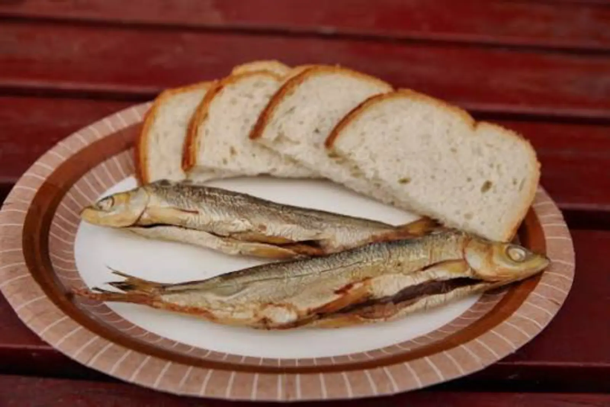

ARTICLE • October 26, 2026
West Pomeranian Cuisine — Fish, Paprykarz, and Herring
West Pomeranian cuisine is the taste of the Baltic and the Szczecin Lagoon. Discover what is worth eating in Szczecin and on the western coast — from paprykarz to Szczecin cheesecake, with specific places and prices.

West Pomeranian cuisine is the cuisine of a coastal region — based on Baltic and freshwater fish, with influences from German and Swedish cuisines. It is simple, hearty, but at the same time diverse — from fish specialities to thick soups. West Pomerania belonged to Germany and Sweden for centuries — Szczecin was Swedish in 1630–1720, then Prussian, and after 1945 it returned to Poland. Add to that the specificity of the Szczecin Lagoon — the largest freshwater body in Poland, where sea and river waters meet. This is a region where the cuisine combines three worlds: fishing (Baltic), river (Odra, Lagoon), and agricultural (villages around Szczecin).
This guide shows 8 dishes you must try in West Pomerania, and specific places in Szczecin, Świnoujście, Kołobrzeg, Międzyzdroje, and Darłowo where you can eat them in an authentic, not touristy, version.
Szczecin Specialities
1. Szczecin Paprykarz
The icon of Szczecin cuisine and one of those dishes that all of Poland knows — fish paste with rice, tomatoes, peppers, and onion. Invented in the 1960s in Szczecin, at the “Gryf” Fish Plant, still produced in many versions — in cans, jars, even in a restaurant version. The history of paprykarz dates back to the communist era, when the Szczecin fish plants were looking for a way to use fish scraps (mainly cod and herring) — they were combined with rice, tomatoes, peppers, and onion, seasoned spicy, and sealed in a can. The result turned out to be a hit — paprykarz became one of the most popular food products in Poland. Today, Szczecin paprykarz has the status of a regional product and is protected as the culinary heritage of Szczecin. It is served on sandwiches with bread and butter, as a snack, as well as an addition to eggs or potatoes. In the restaurant version, it is sometimes served as a bread paste with shrimp or mussels added, but the classic version — from a can — is still the most popular.
Price: 8–15 PLN per can in a shop, 25–40 PLN per portion in a restaurant. Where: Paprykarz Szczeciński (company shop, Szczecin, ul. Targowa 8), Restauracja Stary Młyn (Szczecin, ul. Wyszyńskiego 12), Fish Market (Szczecin, ul. Targ Rybny 1).
2. Szczecin Cheesecake
Cold or baked cheesecake, with raisins, orange peel, and vanilla. Popular in Szczecin and the entire region, served at holidays and family celebrations. Szczecin cheesecake is one of those cakes that have cult status in the region — unlike classic cheesecake, the Szczecin one is more “creamy”, with a distinct note of vanilla and citrus. In the baked version, Szczecin cheesecake has a creamy consistency, not a compact curd — thanks to the large number of eggs and long baking at low temperature. In the cold version, it is served with fruit jelly or whipped cream. In many pastry shops in Szczecin, Szczecin cheesecake is baked according to recipes passed down from generation to generation, with the addition of orange peel, raisins, and vanilla — this gives it a deep, spicy flavour. Try it at the Christmas market in Szczecin (December) or in pastry shops on the Chrobry Embankment.
Price: 30–50 PLN for a whole cake, 8–15 PLN per slice. Where: Cukiernia Bajkowa (Szczecin, ul. Rayskiego 19), Cukiernia Ruska (Szczecin, ul. Ruska 12), Christmas market in Szczecin (December).
Fish from the Baltic and the Szczecin Lagoon
3. Herring in Oil
A classic of West Pomeranian cuisine. Marinated herring, served with onion, oil, and potatoes in their jackets. There are many variations — in sour cream, in vinegar, with mustard. The best in small fish shops by the sea and lagoon. Herring in West Pomerania has a long tradition — as early as the Middle Ages, Szczecin was an important trading port through which herring from the Baltic flowed to all of Europe. Today herring returns to tables as an everyday and festive dish — in the traditional version with onion and oil, in the modern version with additions. Note that herring in West Pomerania is often marinated at home — with vinegar, onion, bay leaf, and allspice. In fish shops by the lagoon, herring is often served with potatoes in their jackets and sour cream.
Price: 15–25 PLN per portion in a fish shop, 8–15 PLN per jar in a fish shop. Where: Smażalnia Ryb Kuter (Szczecin, ul. Targ Rybny 1), Bar Rybny Neptun (Świnoujście, ul. Armii Krajowej 5), Smażalnia Ryb in Darłowo (ul. Morska 4).
4. Smoked Fish
Smoked fish is the icon of the western coast. Halibut, salmon, mackerel, eel — every fish smoked in a home smokehouse tastes different. It is served with bread, butter, and lemon. Try it in small smokehouses in Świnoujście, Międzyzdroje, Dziwnów. Fish smoking in West Pomerania has a long tradition — dating back to the times when fishermen had to preserve their catch for longer. Today smoking is a craft that has survived in a few fishing families on the Szczecin Lagoon, in Świnoujście, and on Wolin Island. Pay attention to smoked mackerel (cheapest and most available), salmon (more expensive but more delicate), and eel (most expensive but most valued). In West Pomerania, freshwater fish are also smoked — pike-perch, bream, pike, even eel from the Szczecin Lagoon.
Price: 25–45 PLN for mackerel, 45–70 PLN for salmon, 80–120 PLN for eel (per kg). Where: Wędzarnia Ryb in Świnoujście (ul. Wybrzeże Wyspiańskiego 12), Wędzarnia Ryb in Międzyzdroje (ul. Bohaterów Warszawy 8), Wędzarnia Ryb in Dziwnów (ul. Morska 22).
5. Herring in Sour Cream
Marinated herring served in thick sour cream with onion and apple. A classic of German cuisine, also adopted in West Pomerania. It is served with potatoes or bread. Herring in sour cream is one of those dishes that in West Pomerania have German roots — a similar dish (“Matjes in Sahnesoße”) has been eaten in Germany for centuries. In the West Pomeranian version, herring in sour cream is more “sour” — vinegar, onion, apple, and horseradish are added, which give it an expressive flavour. In the classic version, herring in sour cream is served with potatoes in their jackets and pickled cucumber; in the restaurant version — with bread and butter. Try it in small fish bars in Świnoujście and Kołobrzeg, where it is often made on site, not bought in a jar.
Price: 15–25 PLN per portion. Where: Bar Rybny Neptun (Świnoujście), Smażalnia Ryb Kuter (Szczecin), Bar Rybny in Kołobrzeg (ul. Portowa 8).
6. Fried Flounder
A flat Baltic fish, fried in a pan, served with fries, salad, and lemon. A classic of seaside fish shops. Try it in small fish shops in Świnoujście, Kołobrzeg, Darłowo. Flounder is a fish that has graced West Pomeranian tables for centuries — its meat is delicate, white, with a mild flavour, and the price is affordable. In the traditional version, flounder is coated in flour and fried in butter or oil, served with boiled potatoes and sauerkraut salad. In the modern version — with fries and coleslaw. Pay attention to whether the flounder is fresh — it should have bright eyes and pink gills. In fish shops by the Szczecin Lagoon, flounder is sometimes served with potatoes in their jackets and garlic sauce — a specificity of this region.
Price: 30–50 PLN per portion (2 flounders with sides). Where: Smażalnia Ryb in Świnoujście (ul. Armii Krajowej 5), Smażalnia Ryb in Kołobrzeg (ul. Portowa 8), Smażalnia Ryb in Darłowo (ul. Morska 4).
Soups and Sides
7. Fish Soup
A soup based on broth from Baltic fish, with vegetables, potatoes, and sour cream. It is served with croutons or bread. In the West Pomeranian version — with dill and bay leaves, which give the soup freshness and depth. The key to a good fish soup is the broth — it is cooked from several species of fish (usually roach, perch, bream, and cod), and only at the end is the main fish added, e.g. salmon or eel. Fish soup in West Pomerania is sometimes thickened with egg yolk and sour cream, which gives it a creamy consistency. In the Świnoujście version, mussels or shrimp are added; in the Szczecin version — freshwater fish from the Szczecin Lagoon. Order it at the fishing port in Świnoujście or in small fish shops by the Szczecin Lagoon.
Price: 15–25 PLN per bowl. Where: Restauracja Stary Młyn (Szczecin), Bar Rybny Neptun (Świnoujście), Smażalnia Ryb in Darłowo.
8. Kaszanka with Onion
Buckwheat groat and blood sausage, fried with onion. It is served with potatoes, bread, or as a snack. A simple dish, deeply rooted in the region's tradition. Kaszanka is one of those dishes that in West Pomerania is prepared after pig slaughter (usually in the autumn-winter period), when fresh meat and blood are available. In the West Pomeranian version, kaszanka is fried with onion and bacon, served with boiled potatoes or bread. Kaszanka is also popular at markets and festivals — fried in large pans, served with mustard and onion. Try it at the Fish Market in Szczecin (Saturday morning) — local butcher shops sell kaszanka there.
Price: 12–20 PLN per portion. Where: Fish Market (Szczecin, ul. Targ Rybny 1), Bar Mleczny in Szczecin (ul. Bogusława 12), local butcher shops in West Pomerania.
Where to Eat — Specific Places
Szczecin (Chrobry Embankment, Old Town):
- Restauracja Stary Młyn (ul. Wyszyńskiego 12) — a classic of West Pomeranian cuisine, paprykarz, fish soup, cheesecake.
- Smażalnia Ryb Kuter (ul. Targ Rybny 1) — a fish shop in the port, flounder, herring, cod.
- Bar Mleczny in Szczecin (ul. Bogusława 12) — a milk bar with regional classics, kaszanka, herring.
- Cukiernia Bajkowa (ul. Rayskiego 19) — Szczecin cheesecake, regional bakes.
Świnoujście, Międzyzdroje, Dziwnów (western coast):
- Bar Rybny Neptun (Świnoujście, ul. Armii Krajowej 5) — a fish bar, herring, fish soup, flounder.
- Wędzarnia Ryb in Międzyzdroje (ul. Bohaterów Warszawy 8) — smoked fish straight from the smokehouse.
- Restauracja Rybacka (Dziwnów, ul. Morska 22) — fishing cuisine, fish from the Szczecin Lagoon.
Kołobrzeg and Darłowo (central coast):
- Smażalnia Ryb in Kołobrzeg (ul. Portowa 8) — a classic fish shop, flounder, cod, herring.
- Smażalnia Ryb in Darłowo (ul. Morska 4) — fish straight from the cutter, fish soup.
- Fish Market in Darłowo — fresh fish straight from fishermen (Saturday morning).
Practical Tips
- Buy Szczecin paprykarz in the company shop or at the Fish Market in Szczecin — not in supermarkets. The company version is more expressive and less sweet.
- Buy smoked fish in smokehouses, not in tourist shops — in smokehouses they are cheaper and real; tourist shops often sell frozen fish.
- Herring in sour cream is best in small fish bars, where it is made on site — not in a jar from a shop.
- Flounder should have bright eyes and pink gills. If the eyes are cloudy, the fish is old.
- Szczecin cheesecake buy in regional pastry shops (Bajkowa, Ruska) — supermarkets sell fakes.
- In the summer season (July–August) in Świnoujście and Międzyzdroje it is crowded — on weekends it is worth booking a table in fish shops in advance.
Summary
West Pomeranian cuisine is the cuisine of three worlds — fishing (Baltic), river (Szczecin Lagoon), and agricultural (villages around Szczecin). Hearty, diverse, with clear German and Swedish influences. Instead of fashionable dishes, you will find classics here: Szczecin paprykarz, Szczecin cheesecake, herring, smoked fish, fish soup, flounder, kaszanka. Plan your trip to West Pomerania to try at least five of the eight dishes — and preferably eat them in fish shops at the port and in smokehouses, where the cuisine is still home-style, not touristy. If you like coastal regions, also check our pages on Pomeranian cuisine and Kashubian cuisine — the cuisine looks similar there, but with its own accents.